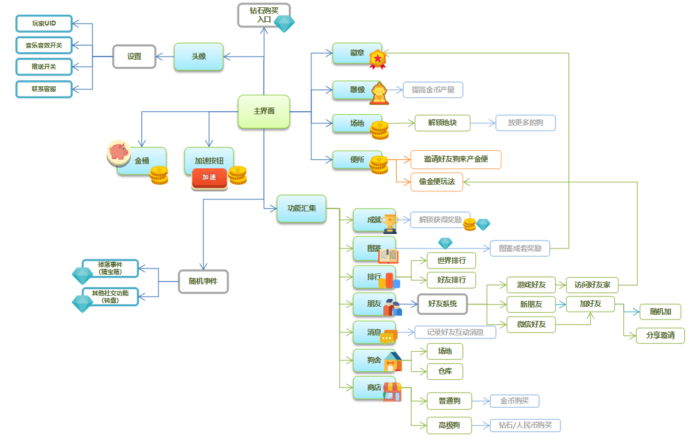
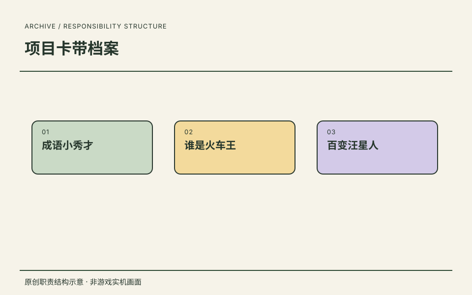
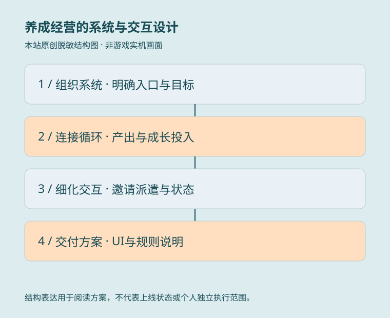

从经营目标拆解系统结构


设计问题
如何让放置产出、成长目标与社交玩法形成关联，而不是堆叠功能入口？
文档产出与来源
立项案第 5.2 节将主界面与资源、培养、社交、收集和商业化入口连接，详细系统文档继续说明规则及跳转。
关键方案与工作价值
- 以主场景为中心组织系统层级，区分常用入口与扩展功能。
- 将图鉴、成就与成长连接，为持续培养提供阶段目标。
- 区分世界榜、好友榜、好友申请与拜访，细化社交模块的职责边界。
08 / 项目卡带档案
作为《成语小秀才》项目唯一策划，主导玩法、科举题材包装与养成线；同时保留《谁是火车王》《百变汪星人》的主策划项目经历。
MY WORK / DESIGN VALUE
任职角色已确认；成语资料与用户指定立项资料分开呈现。立项案有页眉策划署名，不仅依据元数据；团队美术不认定本人独立执行。
职责依据本人履历与确认；原图补充设计证据，经营结果另行说明来源与口径。

作为《成语小秀才》项目唯一策划，主导玩法、科举题材包装与养成线；同时保留《谁是火车王》《百变汪星人》的主策划项目经历。
以主策划身份参与《成语小秀才》、《谁是火车王》、《百变汪星人》。
这里保留任职角色与项目记录。
作为《成语小秀才》项目唯一策划，主导玩法、科举题材包装与养成线；同时保留《谁是火车王》《百变汪星人》的主策划项目经历。
任职、角色与职责依据本人履历及确认。图示是本站原创的职责结构表达。
DESIGN JOURNAL / 方案摘要
读背景、职责、方案与可证实产出。
SYSTEM DESIGN / ECONOMY / UI·UE
从系统关系到资源循环，再到界面状态与操作流程，展示策划方案如何落到可讨论的交付内容。
按用户最新确认，Goose 资料对应《百变汪星人》，不再归入《谁是火车王》。立项原文标题为《超级铲屎官》，正文称其基于《疯狂鹅场》后续开发；保留历史名称，不把方案标题直接认作最终上线名称。立项案页眉署名“策划：吴天昊”；封面另有笔名，未据此推定身份。图中美术由团队承担，历史方案不代表全部已上线。

如何让放置产出、成长目标与社交玩法形成关联，而不是堆叠功能入口？
立项案第 5.2 节将主界面与资源、培养、社交、收集和商业化入口连接，详细系统文档继续说明规则及跳转。

怎样让放置收益有持续的投入方向，并让容量与培养形成不同的成长目标？
第 5.3 节经济循环图整理生产、收取、培养、购入与升级的关系，展示系统与资源设计的结构表达。

邀请与派遣涉及多名玩家，如何说明可操作条件、等待状态和结果反馈？
第 6.3 节同时提供规则正文与操作流程图，覆盖邀请、仓库选择、派遣、等待和收取；原图含历史示例界面。

如何减少访问核心功能的操作，同时为后续功能保留扩展空间？
更新说明明确将常用入口从折叠菜单移至主界面下方，调整收取容器的位置并缩小加速按钮；主界面图提供交付参考。
来源：Goose 目录中的《超级铲屎官》立项策划案_20180629.doc，封面日期为 2018/6/14，文件名为 20180629 版本；另核对主界面、背包、好友和成就功能文档。立项案的在场／库存分页与单独背包文档的狗窝结构不完全一致，按不同版本阅读，不断言最终采用哪版；好友文档未署名，不扩为个人独立作者。完整原件、提审登记、市场测试数据、配置与程序文件未公开。

狗场经营需要连接持续产出、培养、容量扩展与社交操作，让成长目标可理解、可执行。
主策划岗位沿用履历，立项案页眉支持策划产出；其他功能文档作项目范围补充，不认定全部个人独立撰写。
通过系统结构和资源循环组织功能关系，再细化邀请派遣、库存切换、主界面高频入口及成就状态。
交付系统与经济结构图、社交流程和界面方案；历史版本与团队美术分别说明，不作为最终上线或增长证明。
摘要依据：用户确认的 Goose 项目资料；《超级铲屎官》立项案页眉署名“策划：吴天昊”，另核对功能文档。按用户最新确认归入百变汪星人，保留原文历史名称，不推定完整更名时间线；完整原件、登记材料和配置不公开。
放大流程图 ↗阅读文档摘要 ↗可滚动阅读大图；也可打开流程图缩放。下方文字提供同等内容。
GAMEPLAY / SYSTEM / UI·UE
从玩法规则到界面状态、阶段引导和活动交付，阅读主策划岗位的具体工作依据。
本页按用户最新确认采用 Train 项目资料，已撤下此前误关联的 Goose 养成方案。个人岗位沿用已确认履历；选中文档未发现明确个人署名，不据目录归属认定独立作者，团队美术与程序不归为个人执行。

怎样将合成、工作收益和商店购买组织成可操作的成长循环？
以核心 UE 图连接槽位、轨道、资产与商店，配套状态和读表规则，体现系统设计到 UI/UE 交付的完整表达。
来源：核心功能文档。新项目策划文档后续增加材料阶段并删除快捷购买，图中旧入口按历史版本阅读。

交叉轨道和多个方向开关怎样形成程序可实现、测试可验证的规则？
交付轨道节点图与路线切换规则；正文“八种”与实际六类路线列表存在不一致，不将文档当成最终验收结果。
来源：核心功能文档：火车跑圈逻辑、开关关联与箭头显示说明。

怎样让玩家先掌握合成，再进入经营与路线控制，而不是一次看到所有系统？
形成阶段化界面、触发条件、动画及文本需求，明确策划规则和美术资源的配合。解锁图来自较早核心文档，仅作界面参考，不冒充新版实机。
来源：新项目策划文档；核心功能文档：解锁界面。

解锁、动画、地点切换与离线收益怎样衔接，退出后又应从哪里恢复？
用流程图与状态说明覆盖正常路径和退出恢复，降低前后端、UI 与测试对跳转结果的理解偏差。
来源：地点相关功能系统文档。后续新项目文档暂锁部分国家，不据旧图宣称所有地点开放。

怎样让活动承接主玩法，同时把收集、拼图和奖励组织成清晰的体验？
形成系统结构、关卡梯度、交互与资源需求。文字与表格对关卡总量存在差异，不公开最终关卡数或概率；留存与分享提升仅为设计目标。
来源：（活动）铁轨拼图玩法说明。文中“铁路大亨”“火车之旅”为阶段界面名称，不推定最终更名。
地点成长和多种触发入口变化时，如何保持任务进度与奖励操作连贯？
将跨地点进度、领奖与分享触发写成可讨论的状态规则；历史分享方案不作为当前平台合规建议或实际增长证明。
来源：每日任务系统文档、（分享4）免费升级火车功能文档说明。
来源范围：用户指定 Train 目录的六份功能文档。完整原件、经济与概率配置、统计、程序工程及含真人头像和第三方竞品参考图片未公开；设计目标与文档方案不直接认定为上线成果。

合成、轨道经营与活动需要共用清晰的操作、成长与奖励反馈。
主策划岗位与项目参与沿用已确认履历；文档未发现明确个人署名，不据目录认定全部独立撰写。
拆解火车状态与拖拽判定、轨道开关联动、分阶段引导、地点恢复及活动收集领奖。
形成 UE、节点与流程图，以及功能、资源和异常状态说明；不同版本方案分开阅读，不作为上线或增长证明。
摘要依据：用户最新确认的 Train 项目资料：核心功能、新项目策划、地点推进与铁轨拼图等文档。按用户最新指正采用 Train 资料；此前 Goose 养成案不再作为火车项目证据。美术参考与策划贡献区分，原件和配置不公开。
放大流程图 ↗阅读文档摘要 ↗可滚动阅读大图；也可打开流程图缩放。下方文字提供同等内容。
PROJECT EVIDENCE / 成语小秀才
从成长循环、玩家创建关卡，到字块判定、新手引导与生词本，阅读具体的设计规则与界面流程。